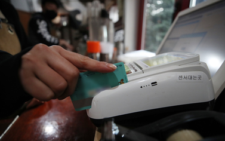

국가공무원인재개발원(NHI)은 올바른 공직가치 확립과 시대가 요구하는 직무 전문성, 리더십 교육을 통해 대한민국 120만 공직자의 든든한 성장 파트너가 됩니다.
"국민의 목소리를 경청하고 현안을 해결하는 당당한 대한민국 공무원"
대한민국 중앙행정기관, 지방자치단체 인재개발원, OECD 및 해외 공공 HRD 기관과 긴밀한 정책 거버넌스를 구축하고 있습니다.
열정적인 정책 토론과 스마트 디지털 행정 실습, 대국민 정책 브리핑을 통해 국민을 향해 헌신하는 대한민국 공무원들의 생생한 모습을 소개합니다.
신임 및 중견 관리자 과정에서 복합적인 사회 문제의 정책 대안을 마련하고, 언론 및 국민을 대상으로 설명하는 모의 국무회의와 브리핑 훈련을 진행합니다.

공공 빅데이터와 생성형 인공지능(AI) 도구를 실무에 접목하여 정책 수립의 정확성과 대민 행정 서비스의 품질을 높이는 디지털 실전 역량을 함양합니다.
국민의 일상생활에 실질적인 보탬이 되는 핵심 국정과제를 분석하고, 부처 간 칸막이를 허물어 협업하는 원팀(One-Team) 공직 문화를 체득합니다.
국가공무원인재개발원은 공직자가 갖추어야 할 확고한 가치관과 미래 지향적 전문성을 길러냅니다.
애국심, 민주성, 도덕성 등 기본적 공직 윤리를 내재화하고, 국민의 봉사자로서 올바른 마음가짐과 청렴성을 함양합니다.
디지털 대전환, 인공지능(AI), 데이터 기반 행정 등 복합적인 국가 현안에 신속하고 창의적으로 대응하는 정책 전문성을 기릅니다.
부처 간 칸막이를 허무는 열린 협업과 국민과의 진정성 있는 소통, 국제 사회와의 긴밀한 공공 거버넌스 교류를 주도합니다.
대한민국 공무원의 입직부터 최고 리더까지 책임지는 4대 핵심 업무 영역입니다.
공직 입문부터 고위공무원에 이르기까지 직급과 역할에 최적화된 맞춤형 성장 프로그램을 운영합니다.
시간과 장소에 구애받지 않고 언제 어디서나 학습할 수 있는 대한민국 대표 온라인 인재개발 플랫폼을 제공합니다.
공직 사회의 교육 수요와 환경 변화를 과학적으로 분석하여 공무원 교육 정책 및 커리큘럼을 선진화합니다.
대한민국의 성공적인 발전 경험과 우수 행정 시스템을 해외 국가들과 공유하고 국제적 위상을 제고합니다.
공직 생애주기에 맞춰 체계적으로 설계된 리더십·직무 역량개발 시스템입니다.
5급 공채 합격자 등
5급~4급 승진 후보자
신임 과장 및 과장 후보자
고위공무원 후보자 및 국장급
국가공무원인재개발원은 충북 진천 본원과 경기 과천 분원으로 운영되고 있습니다.
방문하시려는 캠퍼스를 선택하시면 교통편 및 안내 사항을 확인하실 수 있습니다.
충청북도 진천군 덕산읍 교학로 30
충북혁신도시 공용터미널에서 하차 후 시내버스 환승 또는 택시를 이용합니다.
경기도 과천시 교육원로 118 (중앙동)